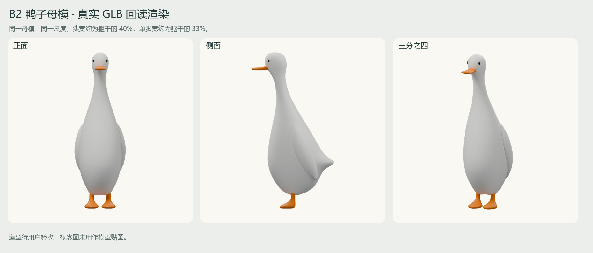
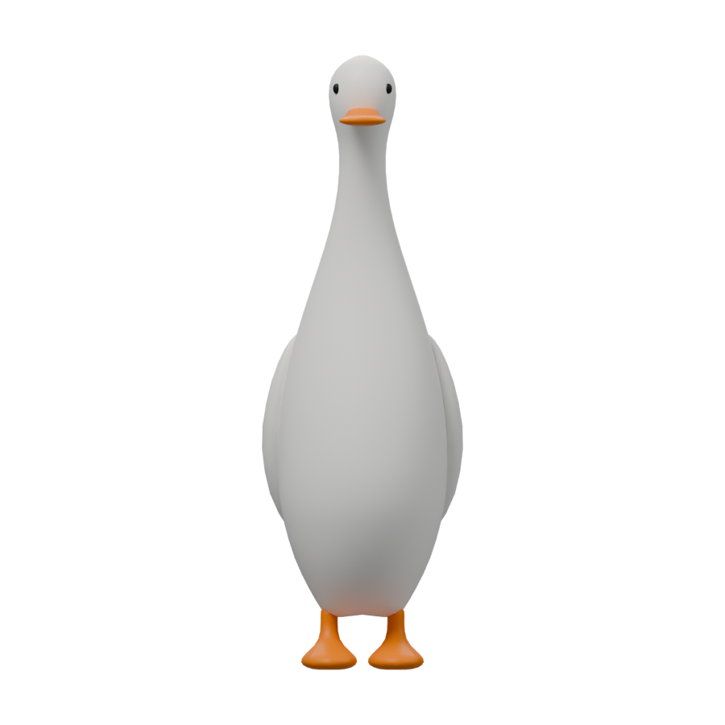
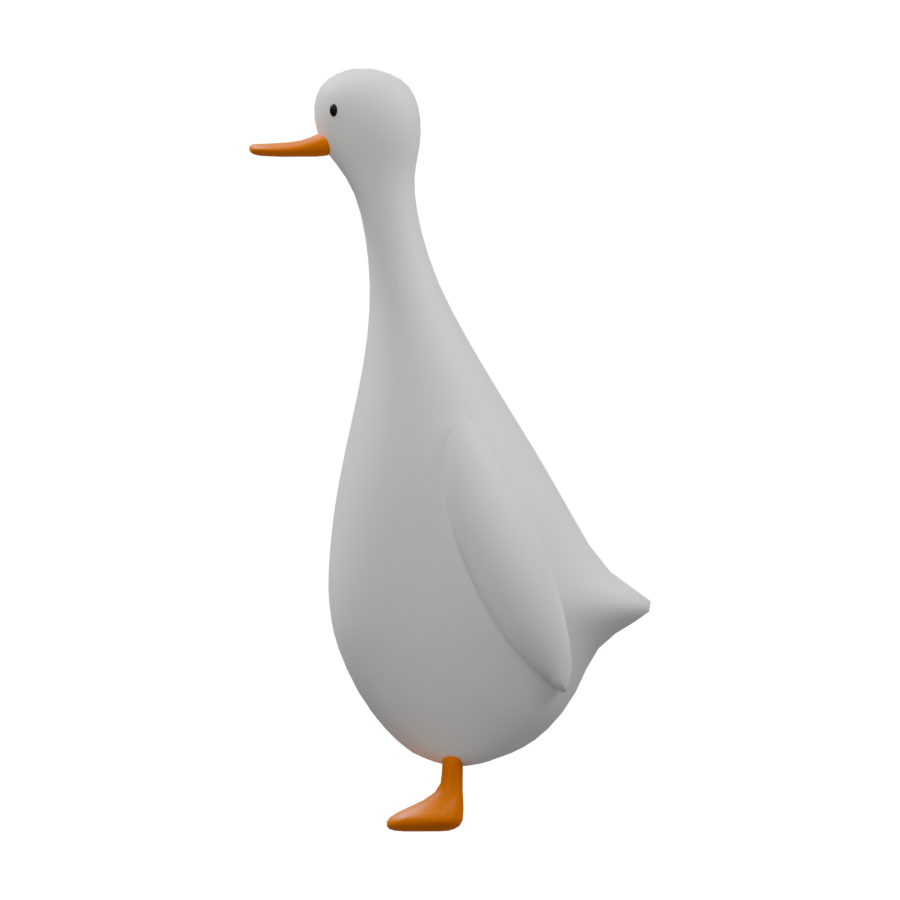
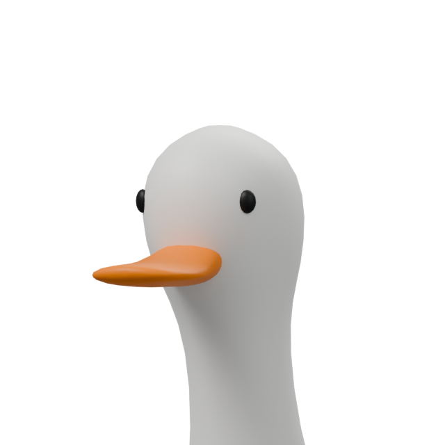
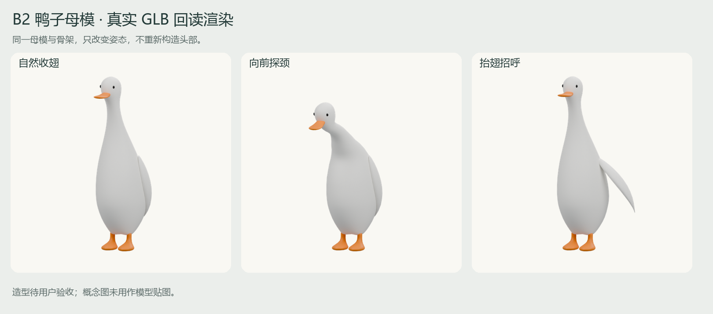
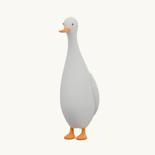
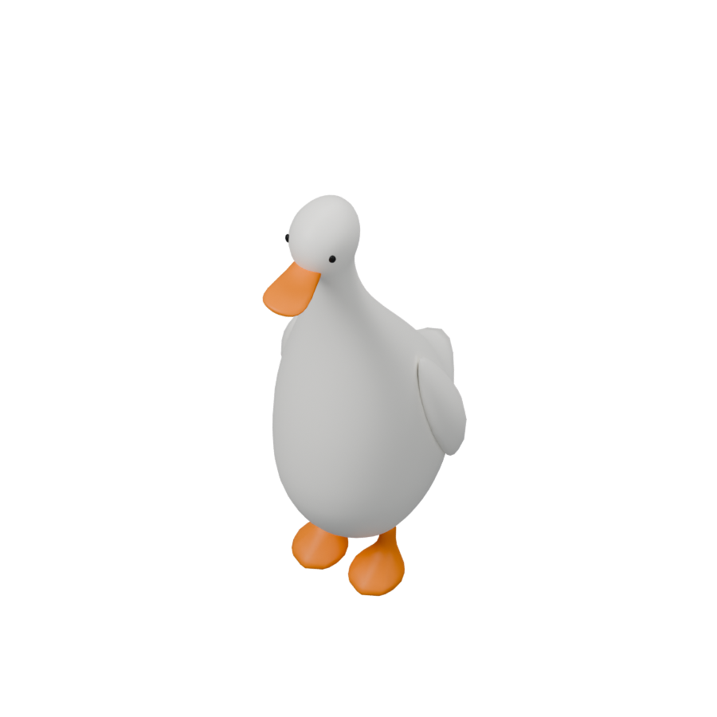
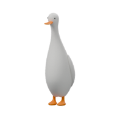
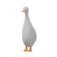
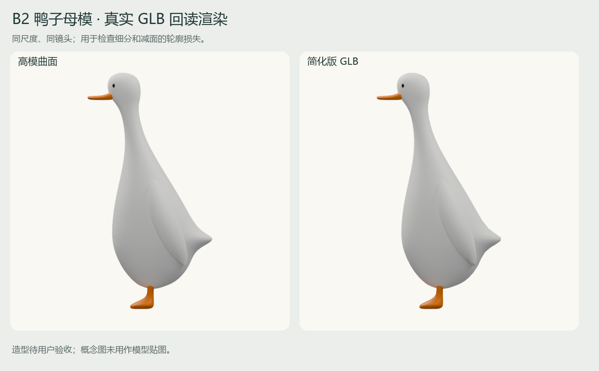

真实三维母模 · 造型待验收小头、小脚，先把鸭子本体做准
B2 生图比例已收到“通过 完成计划”确认。这次交付一只完整、可编辑、可变形的鸭子母模，修正旧模型的大头和头颈断续问题。三款融合模型将沿用这张网格。

静态 GLB · 含三个动作的 GLB · 可编辑控制网格 Blender · 绑定与动作 Blender
对照已确认的 B2 概念

上图为原始生图，下列图为实际网格。生图各视角并非严格工程投影，造型一致性仍由人工验收；这里没有将概念图当作三维技术验证结果。

正面：小头、窄躯干、贴身翅膀与小蹼足
侧面：连续头颈胸曲线与短尾
头部放大：小黑眼与宽扁鸭嘴，独立近景同一张网格的姿态与动作


待机招呼 点击回弹
点击回弹动画来自导出 GLB 回读渲染。三个动作都有实际顶点位移，结束回到静止姿态；尚未在 Unity 导入或替换首页。
游戏俯视与缩略图

游戏俯视检查
192px 原始图标
64px 原始图标技术状态
| 项目 | 实际结果 |
|---|
| 实测头宽 / 躯干宽 | 39.7% |
| 单脚宽 / 躯干宽 | 32.9% |
| 母模三角面 | 5,412；低于 6,000 上限，高于 2,000–4,000 目标，未宣称达到组合件目标 |
| 静态 / 动作 GLB | 124,092 / 198,736 bytes |
| 材质 | 单网格、单材质、单 primitive，256px 图集 |
| 几何与格式 | GLB 回读闭合、尺寸与居中检查；Khronos 零错误、零警告 |
| 尚待完成 | 母模造型验收、三款融合重做、同尺寸竞品对照、其余 17 款、Unity 首页与独立评审关及运行验证 |
高模与简化版轮廓

同一个控制网格细分得到高模与简化版，使用相同尺度、镜头和灯光。轮廓差异报告只验证简化损失，不代表设计验收。
轮廓对照记录 · glTF 检查 · 动作回读检查 · 交付说明与下一步